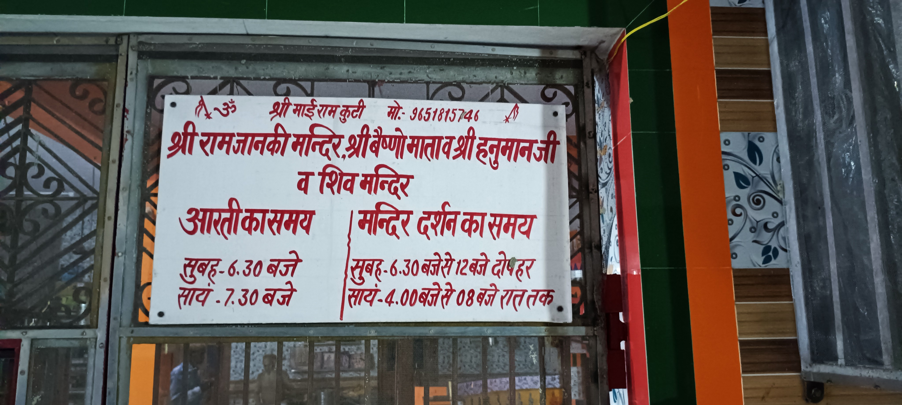
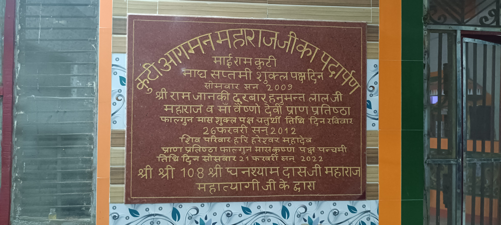
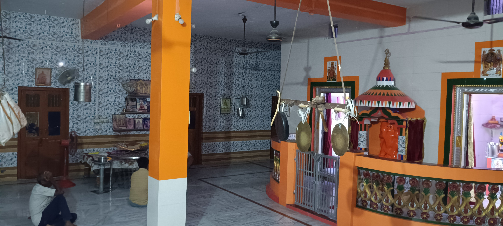
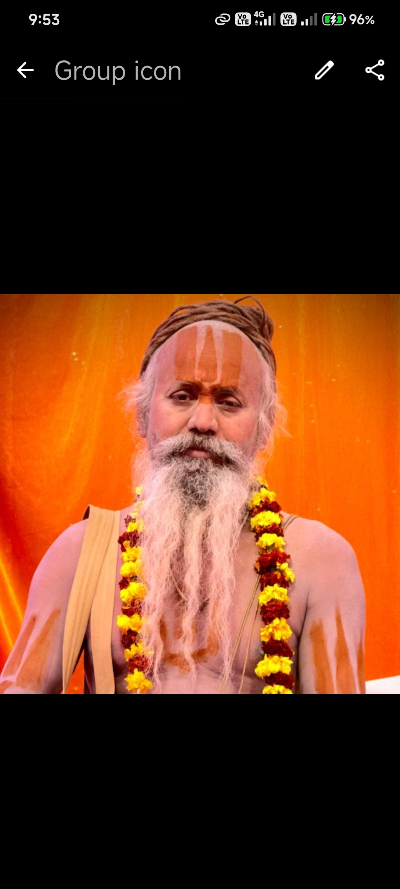

मंदिर की पुरानी यादें
परिसर, प्रतिमाओं, दीवारों और सेवा से जुड़ी supplied photos की शांत झलक। तस्वीरों के साथ कोई तारीख या इतिहास अनुमान से नहीं जोड़ा गया है।
Real photo archive
तस्वीरों में मंदिर
हर photo supplied original archive से है; यहां कोई तारीख या कहानी अनुमान से नहीं जोड़ी गई है।
 रात का शांत मंदिर
रात का शांत मंदिर
परिसर की एक झलक
संध्या का भाव
मंदिर का वातावरण दीवारों पर सहेजी यादें
दीवारों पर सहेजी यादें सेवा और स्मरण
सेवा और स्मरण मंदिर का शांत कोना
मंदिर का शांत कोना
साझा की गई स्मृति